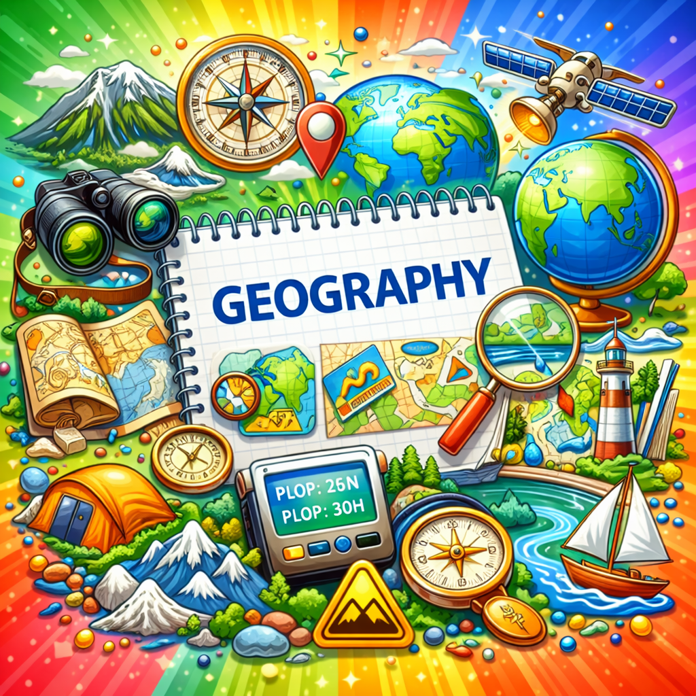

Πινγκ Πονγκ Γεωγραφίας
Μια διαδραστική επανάληψη στη Γεωγραφία της Β΄ Γυμνασίου, οργανωμένη με βάση όλα τα μαθήματα και το υλικό των ερωτήσεων.
Οδηγίες
🏓 Δύο παίκτες ή ομάδες απαντούν εναλλάξ σε ερωτήσεις πολλαπλής επιλογής Γεωγραφίας.
💡 Η ομάδα που έχει σειρά φωτίζεται με χρυσή ένδειξη.
✅ Κάθε σωστή απάντηση δίνει 1 πόντο.
❌ Σε λάθος απάντηση εμφανίζεται η σωστή επιλογή.
📚 Μπορείς να επιλέξεις όλη την ύλη ή συγκεκριμένο μάθημα.
🏆 Νικήτρια είναι η ομάδα με το υψηλότερο σκορ στο τέλος.
Επιλογή avatar ομάδων
Πινγκ Πονγκ Γεωγραφίας - Β΄ Γυμνασίου
Επίλεξε ύλη Γεωγραφίας και πάτησε έναρξη για να ξεκινήσει ο αγώνας.
🌍
Παίκτης/τρια - Ομάδα 1
0
Αναμονή έναρξης
Γύρος 0 / 0
Επίλεξε μάθημα ή όλη την ύλη και πάτησε έναρξη.
🧭
Παίκτης/τρια - Ομάδα 2
0
Πάτησε «Έναρξη / Νέο Παιχνίδι» για να ξεκινήσει ο αγώνας.
Μάθημα: -
Ο χώρος ερωτήσεων θα ενεργοποιηθεί μόλις επιλεγεί μάθημα και πατηθεί η έναρξη.